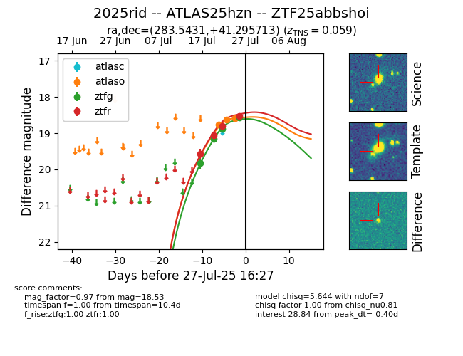

Target 2025rid at 2025-07-27 16:27, see:
FINK: fink-portal.org/2025rid
Lasair: lasair-ztf.lsst.ac.uk/objects/2025rid
ALeRCE: alerce.online/object/2025rid
TNS: wis-tns.org/object/2025rid
YSE: ziggy.ucolick.org/yse/transient_detail/2025rid
alt names
ZTF25abbshoi (ztf,fink)
2025rid (tns,yse)
ATLAS25hzn (atlas)
coordinates:
equatorial (ra, dec) = (283.5431,+41.29571)
galactic (l, b) = (71.1436,+17.03447)
photometry
last atlaso=18.59, ztfg=18.57, ztfr=18.53
3 atlaso, 4 ztfg, 4 ztfr detections
